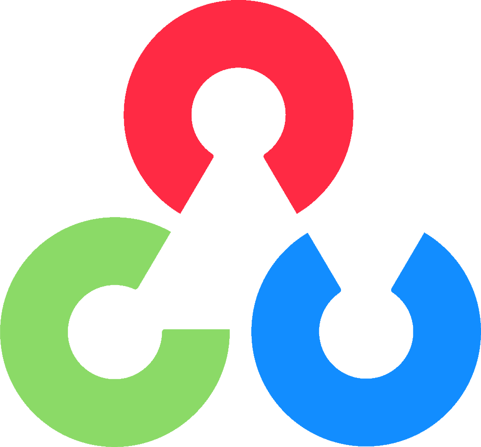
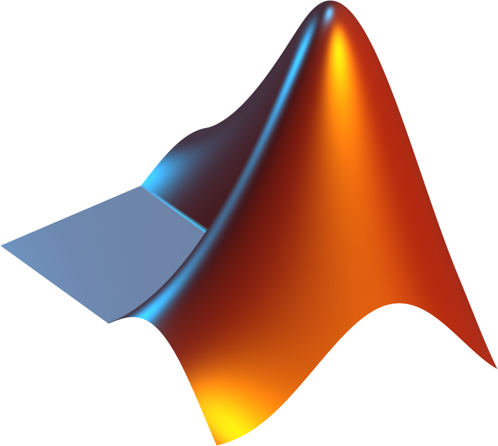
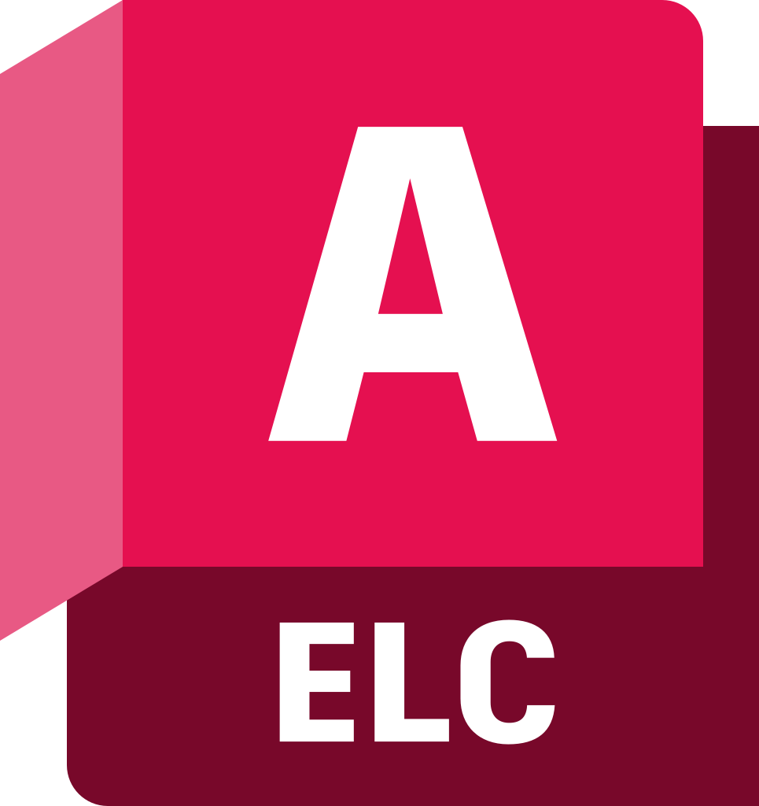
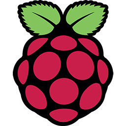
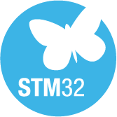
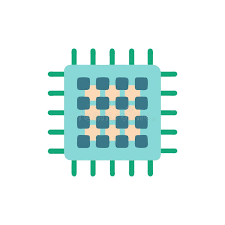
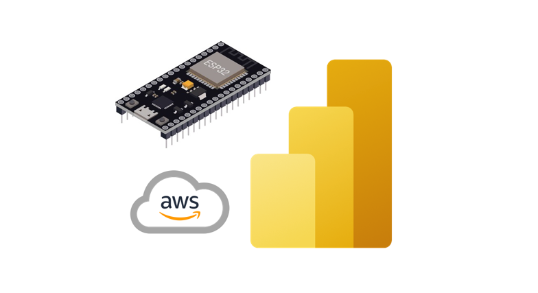
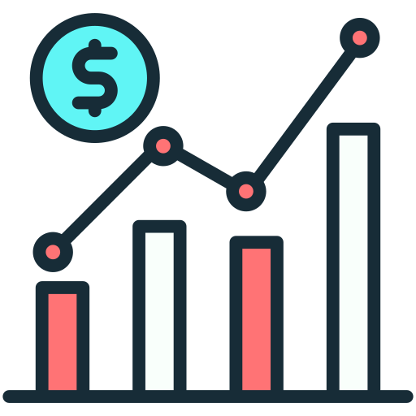
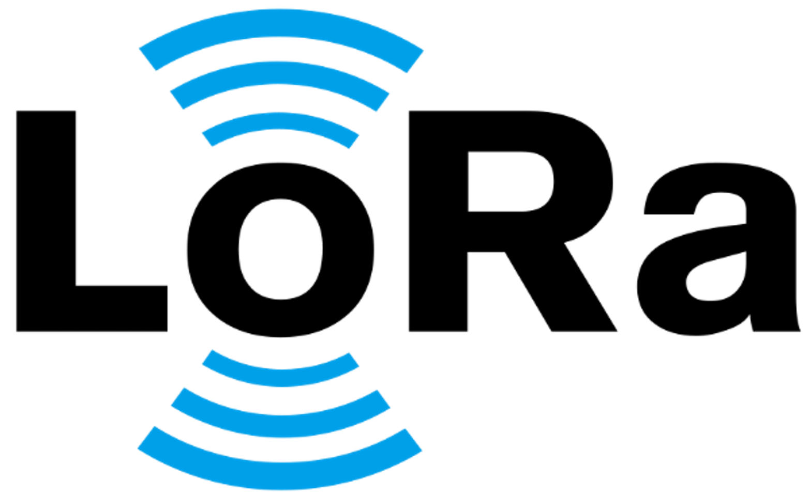
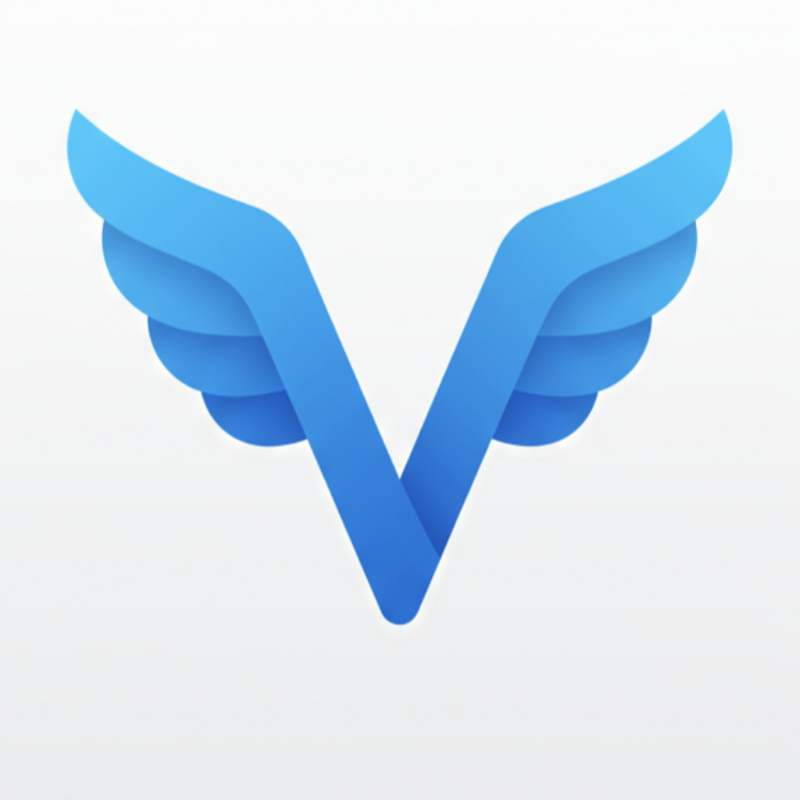

Electrical Engineering student at Poli-USP focused on embedded systems, automation, hardware-software integration and applied data analysis. Estudante de Engenharia Elétrica na Poli-USP com foco em sistemas embarcados, automação, integração hardware-software e análise de dados aplicada.
I build practical engineering solutions that connect electronics, firmware, mobile apps and data workflows. My goal is to contribute in internships across engineering, operations, energy, healthcare, finance or technology, especially where technical execution and analytical thinking need to work together. Desenvolvo soluções de engenharia com aplicação prática, conectando eletrônica, firmware, aplicativos e fluxos de dados. Busco estágio em engenharia, operações, energia, saúde, mercado financeiro ou tecnologia, especialmente em contextos onde execução técnica e raciocínio analítico precisam andar juntos.

A mix of embedded engineering, software and data tools that I use in academic and independent projects. Combinação de engenharia embarcada, software e ferramentas de dados que utilizo em projetos acadêmicos e independentes.










Currently strengthening: Power Query, DAX, cloud fundamentals and data workflows for engineering and operations. Em desenvolvimento: Power Query, DAX, fundamentos de cloud e fluxos de dados voltados a engenharia e operações.
Fields where I want to apply engineering with a strong combination of technical execution and data-driven decision making. Áreas em que quero aplicar engenharia combinando execução técnica com tomada de decisão orientada por dados.
Selected project experience translated into professional terms, because recruiters rarely read portfolios like engineering reports.Experiências selecionadas traduzidas em linguagem profissional, porque recrutador raramente lê portfólio como relatório de engenharia.
A selection of projects that best represent my current engineering profile.Seleção de projetos que melhor representam meu perfil atual em engenharia.

Telemetry pipeline, dashboards and connectivityPipeline de telemetria, dashboards e conectividade

Native iOS control app for ESP32 devicesApp iOS nativo para controle de dispositivos ESP32

Adaptive control applied to motor systemsControle adaptativo aplicado a sistemas motores

Long-range communication without cellular dataComunicação de longo alcance sem dados móveis

Accident detection, evidence capture and alertingDetecção de acidentes, captura de evidências e alertas